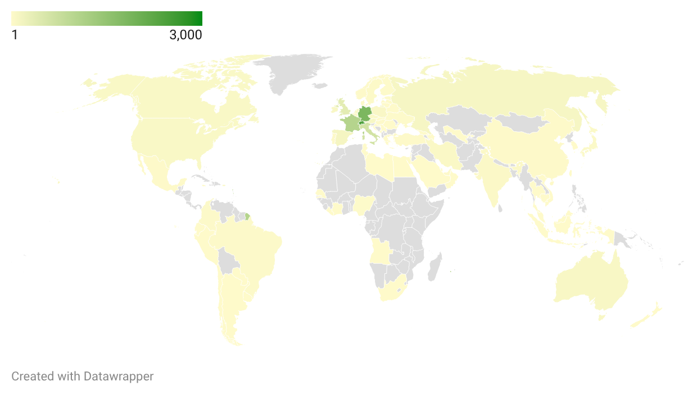

Three national libraries have each uploaded tens of thousands of public-domain images to Wikimedia Commons. We built two large, original datasets on the same images to ask three questions in turn: what gets opened, where it travels, and what generative AI does to its value.
What we study
The same heritage image can be given away for free on Wikimedia, sold as a stock photo for a licence fee, and reused on social media — all at once. We follow each uploaded image across the open web to see where it goes and what it is worth.

Open by Design — putting it online is itself a strategy
From the outside, uploading public-domain images looks like one good deed. Look at what each library actually uploaded — the format, the rights labels, the metadata, the timing — and three very different strategies appear.


British Library
Decentralised mass-release — huge volume, ambiguous rights, 52 % templated metadata.
Koninklijke Bibliotheek
Curator-led — steady, clean public domain, its oldest holdings.
Swiss National Library
Centralised uploads; metadata taken straight from the archive database — high-res TIFF masters, multilingual, 95 % attributed.
From Digitization to Diffusion — where open heritage travels
We followed 15,000 library images out into the wild and found them again 173,000 times — on stock sites, in news stories, on Wikipedia, on social media, across dozens of countries. Roughly two in three images were reused at least once.

What drives reuse (image-level analysis)
Public domain — the strongest positive lever, especially for commercial and news reuse.
JPEG access format — reused far more than archival TIFF.
Years online — each year online ≈ +29 % odds of reuse.
Very high resolution — less likely to be reused at all…
…but once adopted, high-resolution images are reused more intensively.